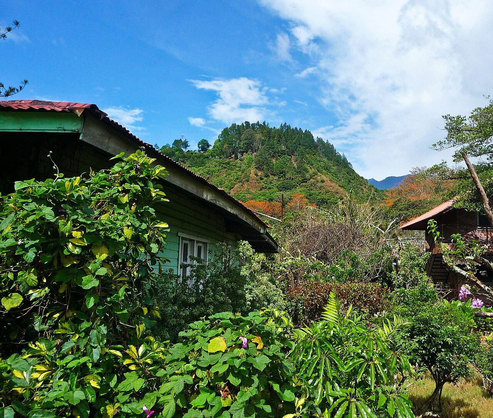

Custom Home Builder
in Panama
The 2026 Guide
Choosing a custom home builder in Panama is the single highest-stakes decision in your build. This guide gives you a regional directory of vetted builders, a 15-point vetting checklist, the contract red flags every foreign buyer needs to watch for, and the questions to ask before you sign.

The most common single mistake foreign buyers make in Panama is choosing a builder on price. A 10% cheaper bid can easily produce a 50% more expensive build by the time you've paid for the cost overruns, the delays, the warranty problems, and the rework. Cheaper is almost never cheaper. Better is almost always better. This guide is built to help you find better, by giving you the vetted list of regional builders, the framework to evaluate any builder you find on your own, and the red flags that should end conversations.
The 15-point vetting checklist
Every builder on your shortlist should pass all 15 of these checks. If one fails on more than two, walk away.
Legal & Licensing
- Active SUNTRACS registration. SUNTRACS is Panama's construction worker union and registration system. Any contractor employing workers must register. Ask for the registration number; verify it's active.
- SPIA-certified responsible architect. Permit plans must be stamped by a SPIA-certified architect or engineer. Ask which SPIA member signs your plans.
- Active corporate tax registration (RUC). Real businesses have a Panama RUC. Ask for it.
- General liability + workers comp insurance. Get current certificates with builder's name on policy. Verify dates.
Track Record & References
- Three completed builds within the past 24 months in your region. Not "in Panama", in your specific region. Pedasí salt-air construction and Boquete cloud-forest construction require different expertise.
- Three reference calls with past clients. Builder picks the references; you choose to ask hard questions.
- Photo evidence of completed builds at three stages (foundation, framing, finished). Ask to see project documentation.
- In-person visit to at least three completed homes, ideally homes 2–5 years old. Catches warranty work, settling, salt-air corrosion, roof failures.
Financial & Contractual
- Fixed-price contract. "Cost-plus" contracts are how cost overruns happen. If the builder won't quote fixed-price, walk away, even on cost-plus contracts that "should" work, foreign buyers consistently end up overpaying.
- Milestone payment schedule with explicit deliverables per payment. Never pay more than 25% deposit. Final 10% withheld until punch list complete.
- Escrow held by independent attorney. Buyer's funds in escrow with a Panama attorney not connected to the builder.
- 12-month warranty in writing. Covers structural, MEP, finishes, and roof. Major builders offer 24 months on structural.
- Penalty clauses for delays. Standard penalty: $50–$150/day after agreed completion date. Builder's incentive aligns with yours.
- Materials and finish specifications in the contract. Specific brand and model, not "premium tile" or "high-end fixtures." Vague language is how substitutions happen.
- Right to inspect at every stage. You or your agent can inspect during construction without notice.
Contract red flags, end the conversation if you see these
- Verbal-only quotes. A builder who won't put pricing in writing is not a builder you should hire.
- "40% deposit so we can buy materials." Industry standard is 25%. The 40% language is the most common Panama small-builder cash-flow problem; you're being asked to fund their other projects.
- Cash-only payments. Real builders accept wire transfers, take legitimate corporate payments, and issue legitimate receipts. Cash demands are warning signs.
- No written contract or "standard contract from the bank." The contract is the most important document in the entire build. Get a custom contract drafted by a Panama real estate attorney.
- Pressure to sign immediately. Real builders have backlogs and aren't desperate. If the builder is desperate enough to pressure you, ask why.
- Lack of permit documentation. Ask to see the MIVIOT permit application before you sign. If it doesn't exist, the build doesn't legally exist.
- Asking you to handle permits in your own name. Some smaller builders shift permitting risk to the buyer. Don't accept this, permits are the builder's responsibility.
The directory, vetted builders by region
This directory is built from Sora's own vetting process plus 18 months of buyer references. We list builders we've personally verified meet the 15-point checklist above. We don't take any compensation for inclusion, this is editorial. If a builder you're considering isn't on this list, run the 15-point check yourself.
Pedasí & Azuero peninsula
SORA Real Estate, Sora is our own design-build platform. We're listed first because we built this guide; we're not pretending to be neutral. Fixed-price USD contracts, 9-month delivery, three published model homes (Casa Bahía, Casa Punta, Casa Refugio) plus full custom, online 3D customizer, milestone-escrow payment structure, 12-month warranty, English-fluent project managers. Pedasí, Playa Venao, and Cambutal coverage. Strongest fit for: buyers who want transparent pricing, structured process, and an integrated tourism-to-build experience.
Marcelo Vasquez Construcciones, Pedasí-local builder with 20 years on the peninsula, known for solid mid-tier custom homes in town and along Playa Arenal. Spanish-primary, intermediate English. Best for buyers comfortable working through a translator and bilingual project manager.
Constructora Las Cumbres, Mid-to-upper-tier, focuses on Playa Venao and Cambutal coastal builds. Has built several of the Vervana-area homes. Strong on architectural integrity and salt-air construction.
Pedro Quintero (independent contractor), Lower-tier custom builds and renovations. Good for buyers building accessory structures or doing renovation work; less ideal for a primary home build given solo-contractor capacity limits.
Boquete & Chiriquí highlands
SORA Real Estate, Boquete, Volcán, Cerro Punta, and Bajo Mono coverage. Same model as above, with regional adjustments for highland construction (insulation, drainage, cooler ambient temps).
Boquete Builders, Long-tenured Boquete builder with a reputation for solid mid-tier highland construction. Strong on classic Boquete architectural style (high ceilings, large covered terraces, fireplace integration). English-fluent.
Habitat Constructores, Mid-to-upper-tier builder operating across the Chiriquí highlands. Has built multiple Valle Escondido-area homes. Strong on energy-efficient construction (good fit for the cooler highland climate).
Constructora El Salto, Established Boquete builder with smaller crew and longer wait times. Good fit for buyers planning 12+ months out who want experienced highland builders.
Volcán & Cerro Punta
SORA Real Estate, Volcán builds run at our lowest per-m² cost ($890–$1,200/m² depending on tier) due to lower land costs and a developing market.
Constructora Tierras Altas, Local Volcán builder with deep relationships in Cerro Punta and Bambito. Spanish-primary; good fit for finca builds where local material sourcing matters.
Bocas del Toro
Bocas del Toro is the most challenging market to build in due to water-taxi logistics, salt-air aggressiveness, and a smaller pool of qualified builders. Premium per-m² of 15–25% over Pacific coast.
SORA Real Estate, We coordinate Bocas builds through partner contractors and our own architectural team. The Bocas market is the only one where we recommend an in-person visit during finish selection (month 5–6) because remote oversight is harder.
Bocas Builders Group, Loose collective of contractors operating across Isla Colón and Bastimentos. Quality varies; verify the specific crew assigned to your build.
What licensed Panama builders actually cost
Builder pricing in Panama varies widely. As of June 2026:
- Tier 1 (luxury / Firma equivalent): $1,200–$1,500+/m² turnkey. Imported finishes, architectural design fee included, full project management, 24-month warranty.
- Tier 2 (mid / Sora equivalent): $950–$1,200/m² turnkey. Mix of imported and local finishes, standard project management, 12-month warranty.
- Tier 3 (budget / Esencial equivalent): $750–$950/m² turnkey. Local finishes, basic project management.
- Below $750/m²: Walk away. Either the finish quality is questionable, the contractor is undercutting to win the deal, or the contract has hidden change-order pricing.
For a full breakdown of cost line items, see our companion piece: Cost to Build a House in Panama, 2026 Calculator & Regional Breakdown.
What to do before signing anything
- Get three written quotes from vetted builders on identical scope.
- Visit three completed homes from each shortlisted builder.
- Call three references from each shortlisted builder.
- Engage a Panama real estate attorney to review the contract before signing.
- Set up escrow with an attorney independent of the builder.
- Walk the lot with the builder and ask about water table, drainage, sun orientation, and access.
- Verify the permit application has been submitted before you wire the deposit.
Skip the vetting process entirely, work with Sora.
Sora is the only design-build platform operating in all four major foreign-buyer markets in Panama. Transparent pricing, fixed-price USD contracts, 9-month delivery, milestone escrow, 12-month warranty. Plus a 3D customizer that lets you play with the cost in your hand before you commit. Free 15-minute call with one of our architects, no obligation.
Frequently asked questions
How do I find a reliable home builder in Panama?
Start with the vetted directory above for your region. For any builder not on the list, run the 15-point vetting checklist, license, insurance, three completed builds in your region, three reference calls, in-person visits to past homes, fixed-price contract, milestone escrow, written 12-month warranty. Don't choose on price alone; cheaper builders almost always cost more in the end through overruns, delays, and rework.
Are Panama builders licensed and regulated?
Yes. Active builders must hold SUNTRACS registration (construction worker union and registration system), the responsible architect must be SPIA-certified, and the business must have an active RUC corporate tax registration. Permit plans require a SPIA stamp. Verify all four before signing.
What's a typical Panama builder's deposit?
Industry-standard deposit is 25%. Reputable builders rarely ask for more. A 40%+ deposit demand is almost always a sign of cash-flow problems, the builder is using your money to fund other projects, which means your project's timeline becomes hostage to other clients' decisions. Walk away from 40%+ deposits.
Can a foreigner directly hire a Panama builder?
Yes. There's no requirement that you hold residency to hire a builder, sign a construction contract, or build on Panama land. You will need to title the underlying land in your name, your Panama corporation, or your Panama foundation, your real estate attorney handles this at closing.
What's the difference between Sora and other Panama builders?
Sora is a design-build platform, we integrate architectural design, project management, and construction in one entity, with transparent published pricing, fixed-price USD contracts, milestone escrow, and an online 3D customizer that lets you play with cost in real time before committing. Traditional Panama builders typically work plan-by-plan with separate architect engagements, custom-quoted construction, and less buyer-facing transparency. Neither model is strictly better, Sora is structured for buyers who want predictability and process; traditional builders work for buyers comfortable with more iteration.
How do I report a Panama builder problem?
If you've already signed and have a dispute: first, document everything with photos, dates, and written communication. Second, engage a Panama real estate attorney. Third, if mediation fails, the SUNTRACS labor board handles labor disputes and the Junta Técnica de Bienes Raíces handles real estate professional disputes. For project quality issues, civil court is the path. Most disputes settle through attorney-mediated negotiation before reaching court.